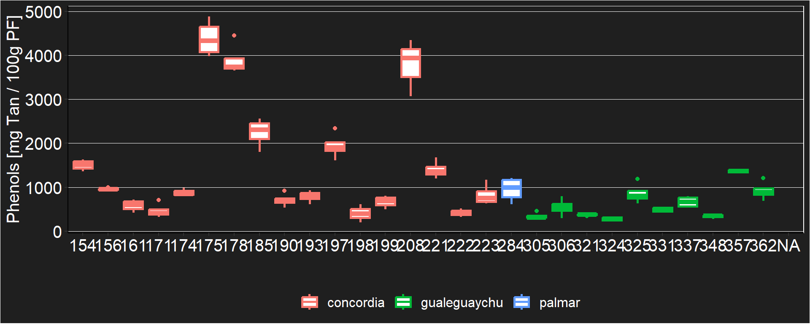

## sitio fenotipo N fenoles sd se ci
## 1 concordia 154 4 1506.6461 122.13417 61.06708 194.34272
## 2 concordia 156 4 957.2040 29.75109 14.87554 47.34062
## 3 concordia 161 4 586.8926 132.73336 66.36668 211.20839
## 4 concordia 171 4 466.0743 167.89328 83.94664 267.15567
## 5 concordia 174 3 884.8687 87.01605 50.23874 216.15986
## 6 concordia 175 4 4390.0160 419.63159 209.81580 667.72750
## 7 concordia 178 4 3899.5233 373.72885 186.86442 594.68600
## 8 concordia 185 4 2245.4375 332.17063 166.08532 528.55760
## 9 concordia 190 4 708.3479 159.55880 79.77940 253.89366
## 10 concordia 193 4 789.8844 134.21064 67.10532 213.55908
## 11 concordia 197 4 1941.7991 301.52996 150.76498 479.80145
## 12 concordia 198 3 402.1616 206.82559 119.41081 513.78324
## 13 concordia 199 4 670.1277 136.55162 68.27581 217.28410
## 14 concordia 208 3 3789.8171 652.94617 376.97865 1622.00822
## 15 concordia 221 4 1400.5584 205.36718 102.68359 326.78501
## 16 concordia 222 3 420.8470 96.86923 55.92748 240.63651
## 17 concordia 223 4 827.6799 241.59550 120.79775 384.43235
## 18 gualeguaychu 305 4 349.7149 74.74939 37.37469 118.94296
## 19 gualeguaychu 306 4 544.8504 206.12275 103.06138 327.98730
## 20 gualeguaychu 321 4 377.3184 22.28198 11.14099 35.45560
## 21 gualeguaychu 324 4 279.0075 45.17222 22.58611 71.87909
## 22 gualeguaychu 325 4 858.8931 236.38201 118.19100 376.13653
## 23 gualeguaychu 331 4 493.4654 59.47186 29.73593 94.63300
## 24 gualeguaychu 337 4 666.0934 126.70495 63.35247 201.61584
## 25 gualeguaychu 348 4 337.6119 42.37053 21.18527 67.42098
## 26 gualeguaychu 357 2 1368.7083 76.87330 54.35764 690.67924
## 27 gualeguaychu 362 4 918.1344 215.19227 107.59614 342.41893
## 28 palmar 284 4 951.4709 278.15389 139.07694 442.60491
## 29 <NA> <NA> 0 NaN NA NA NaN